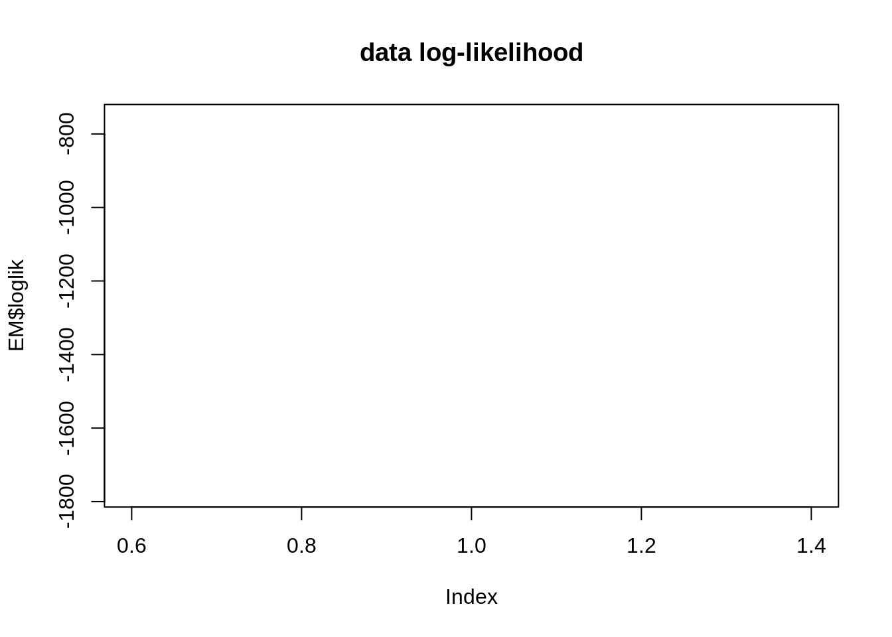
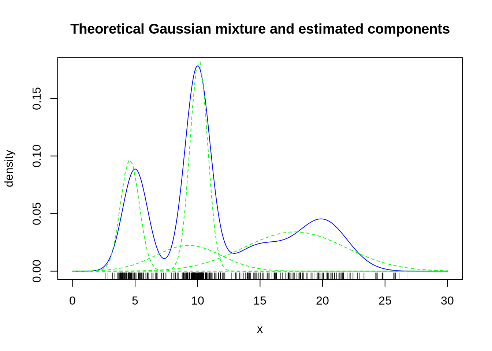

Tutorial: Gaussian mixture model and the EM algorithm
MAP573 team
11/10/2020
library(mixtools)Gaussian Mixture Models
We consider a collection of random variables \((X_1, \dots, X_n)\) associated with \(n\) individuals drawn from \(Q\) populations. The label of each individual describes the population (or class) to which it belongs and is unobserved. The \(Q\) classes have a priori distribution \({\boldsymbol \alpha} = (\alpha_1,\dots,\alpha_Q)\) with \(\alpha_q = \mathbb{P}(Z_i = q)\). In other word, the latent variable \(Z_i \in \{1,..,Q\}\) indicating the label follow a multinomial distribution \(Z_i \sim \mathcal{M}(1,\boldsymbol\alpha)\), such as \(\sum_{q=1}^Q \alpha_q = 1\).
The distribution of \(X_i\) conditional on the label of \(i\) is assumed to be a univariate gaussian distribution with unknown parameters, that is, \(X_i | Z_i = q \sim \mathcal{N}(\mu_q,\sigma^2_q)\).
We further introduce the additional notation \(Z_{iq} = \mathbb 1_{\{Z_i = q\}}\) and \(\tau_{iq}= \mathbb{P}(Z_{iq}=1|X_i)\) for posterior probabilities.
We denote the vector of parameters to be estimated by \(\mathbf{\mu} = (\mu_1,\dots,\mu_Q)\), \(\mathbf{\sigma^2} = (\sigma^2_1,\dots,\sigma^2_Q)\), \(\boldsymbol\tau = (\tau_{iq, i=1,\dots,n; q=1,\dots Q})\).
Questions
- Likelihood. Write the model complete-data loglikelihood.
Solution 1)
The marginal likelihood can be written as \[\begin{equation} \label{eq:likelihood} L(X) = p(X) = \prod_{i=1}^n p(X_i) = \prod_{i=1}^n \sum_{q=1}^Q p(X_i, Z_i = q) = \prod_{i=1}^n \sum_{q=1}^Q p(Z_i = q) p(X_i | Z_i = q) \end{equation}\]
Equivalently, the loglikelihood is \[\begin{equation*} \log L(X) = \sum_{i=1}^n \log \sum_{q=1}^Q p(Z_i = q) p(X_i | Z_i = q) \end{equation*}\]
Alternative (equivalent) formulation
Let us introduce (with slight abuse of notation) \(x \mapsto \mathcal N(x,\mu,\sigma^2)\) the density of a normal distribution \(\mathcal N(\mu,\sigma^2)\).
Introducing the additional notation \(Z_{iq} = \mathbb 1_{\{Z_i = q\}}\), then the following writting will be useful: \[\begin{equation*} \log p(Z_i) = \log\left(\prod_{q=1}^Q (\alpha_q)^{Z_{iq}}\right)= \sum_{q=1}^Q Z_{iq} \log (\alpha_q), \end{equation*}\] which is non zero just when \(q\) is the effective realization of \(Z_i\). Similarly, \[\begin{equation*} \log p(X_i | Z_i) = \log\left(\prod_{q=1}^Q (\mathcal{N}(X_i;\mu_q,\sigma_q^2))^{Z_{iq}}\right) = \sum_{q=1}^Q Z_{iq} \log (\mathcal{N}(X_i;\mu_q,\sigma_q^2)). \end{equation*}\]
Hence, the complete data likelihood can be written \[\begin{equation*} L(X, Z) = p(X, Z) = \prod_{i=1}^n p(X_i, Z_i) = \prod_{i=1}^n p(Z_i) p(X_i | Z_i) = \prod_{i=1}^n \prod_{q=1}^Q (\alpha_q \mathcal{N}(X_i;\mu_q,\sigma_q^2))^{Z_{iq}}, \end{equation*}\] and then \[\begin{equation} \label{eq:cloglikelihood} \log L(X, Z) = \sum_{i=1}^n \sum_{q=1}^Q Z_{iq} \log (\alpha_q \mathcal{N}(X_i;\mu_q,\sigma_q^2)), \end{equation}\]
Keep in mind that the difference between the marginal likelhood and the complete likelhood is that the \(Z_i\) are given in the latter, not in the former. Then, in the expression for \(L(X)\) the summation over the class is indeed an integration over all possible values, while in the expression for \(\log L(X, Z)\), all elements in \(\sum_q\) will be zero except for the one truly observed, that is the \(q\) such that \(Z_{iq} = 1\).
- E-step. For fixed values of \(\hat{\mu}_q, \hat{\sigma}_{q}^{2}\) and \(\hat\alpha_q\), give the expression of the estimates of the posterior probabilities \(\tau_{iq}= \mathbb{P}(Z_{iq}=1|X_i)\).
Solution 2)
As a direct application of Bayes’ theorem, it holds: \[\begin{equation} \tau_{iq} = \frac{\hat\alpha_q \mathcal N(X_i; \hat{\mu}_q, \hat\sigma_q^2)}{\sum_{q=1}^Q \hat\alpha_q \mathcal N(X_i; \hat{\mu}_q, \hat\sigma_q^2)}. \end{equation}\]
- M-step. For fixed values of \(\hat{\tau}_{iq}\), show that the maximization step leads to the following estimator for the model parameters: \[ \hat{\alpha}_q = \frac 1n \sum_{i=1}^n \hat{\tau}_{iq}, \:\:\:\:\: \hat{\mu}_q = \frac{\sum_i \hat{\tau}_{iq} x_i}{\sum_i \hat{\tau}_{iq}}, \:\:\:\:\: \hat{\sigma}_q^2 = \frac{\sum_i \hat{\tau}_{iq} (x_i - \hat{\mu}_q)^2}{\sum_i \hat{\tau}_{iq}}. \]
Solution 3)
The maximization step consists in solving the following optimization problem \[\begin{equation} \label{eq:m_step_optim} \arg \max_{\sigma_q,\mu_q,\alpha_q} \underbrace{\sum_{i=1}^n \sum_{q=1}^Q \hat\tau_{iq} \left(\log \alpha_q - \log\sigma -\log(\sqrt{2\pi}) - \frac{1}{2\sigma_q^2} (x_i - \mu_q)^2 \right)}_{Q(\boldsymbol\sigma,\boldsymbol\mu,{\boldsymbol\alpha};\hat{\boldsymbol\tau})} \end{equation}\]
Consider first the mixture coefficients. We solve the above maximization problem under the constraint that the mixture coefficients sum to 1. This can be dealt with the Lagrange multiplier technique. By deriving the objective function w.r.t \(\alpha_q\), we get
\[\begin{equation} \frac{\sum_i\hat\tau_{iq}}{\alpha_q} + \lambda = 0 \Leftrightarrow \alpha_q = \frac{\sum_i\hat \tau_{iq}}{-\lambda} \end{equation}\]
where \(\lambda\) corresponds to the Lagrange multiplier associated with the constraint \(\sum_q \alpha_q=1\). If we sum the latter result over all \(q\), we get that \(1 = \sum_q \hat \tau_{iq} / (-\lambda)\). In other words, \(\lambda = -\sum_q \hat \tau_{iq}\) so that finally \[\begin{equation} \hat\alpha_q = \frac{\sum_{i=1}^n \hat \tau_{iq}}{\sum_{i=1}^n\sum_{q=1}^Q \hat \tau_{iq}} \end{equation}\]
Concerning, \(\hat\mu_q\), null gradient condition leads to \[\begin{equation} \sum_i \frac{\hat \tau_{iq}}{2\sigma_q^2}(x_i-\mu_q) = 0 \Leftrightarrow \mu_q = \frac{\sum_i \hat \tau_{iq} x_i}{\sum_i \hat \tau_{iq}} \end{equation}\]
Similarly, for \(\hat\sigma_q\), we get \[\begin{equation} \sum_{i=1}^n \hat \tau_{iq} \left(-\frac{1}{2\sigma_q^2} + \frac{1}{2\sigma_q^4}(x_i-\mu_q)^2 \right) = 0 \Leftrightarrow \sigma^2_q = \frac{\sum_{i=1}^n \hat \tau_{iq} (x_i-\mu_q)^2}{\sum_{i=1}^n \hat \tau_{iq}} \end{equation}\]
- Implementation. Complete the following code.
Solution 4)
get_cloglik <- function(X, Z, theta) {
#returns the complete model loglikelihood
n <- length(X); Q <- ncol(Z)
alpha <- theta$alpha; mu <- theta$mu; sigma <- theta$sigma
Xs <- scale(matrix(X, length(X), length(alpha)), mu, sigma)
res <- sum(Z*(log(alpha) - log(sigma) - .5*(log(2*pi) + Xs^2)))
res
}
M_step <- function(X, tau) {
n <- length(X); Q <- ncol(tau)
alpha <- colMeans(tau)
mu <- colMeans(tau * matrix(X,n,Q)) / alpha
sigma <- sqrt(colMeans(tau*sweep(matrix(X,n,Q),2,mu,"-")^2)/alpha)
list(alpha = alpha, mu = mu, sigma = sigma)
}
E_step <- function(X, theta) {
probs <- mapply(function(alpha, mu, sigma) {
alpha*dnorm(X,mu,sigma)
}, theta$alpha, theta$mu, theta$sigma)
likelihoods <- rowSums(probs)
list(tau = probs / likelihoods, loglik = sum(log(likelihoods)))
}EM_mixture <- function(X, Q,
init.cl = base::sample(1:Q, n, rep=TRUE), max.iter=100, eps=1e-5) {
n <- length(X); tau <- matrix(0, n, Q); tau[cbind(1:n, init.cl)] <- 1
loglik <- vector("numeric", max.iter)
Eloglik <- vector("numeric", max.iter)
iter <- 0; cond <- FALSE
while (!cond) {
iter <- iter + 1
## M step
theta <- M_step(X, tau)
## E step
res_Estep <- E_step(X, theta)
tau <- res_Estep$tau
## check consistency
loglik[iter] <- res_Estep$loglik
Eloglik[iter] <- get_cloglik(X, tau, theta)
if (iter > 1)
cond <- (iter>=max.iter) | Eloglik[iter]-Eloglik[iter-1] < eps
}
res <- list(alpha = theta$alpha, mu = theta$mu, sigma = theta$sigma,
tau = tau, cl = apply(tau, 1, which.max),
Eloglik = Eloglik[1:iter],
loglik = loglik[1:iter])
res
}- Examples. We would like now to assess the performance of our EM algorithm. To do so, we generate:
mu1 <- 5 ; sigma1 <- 1; n1 <- 100
mu2 <- 10 ; sigma2 <- 1; n2 <- 200
mu3 <- 15 ; sigma3 <- 2; n3 <- 50
mu4 <- 20 ; sigma4 <- 3; n4 <- 100
cl <- rep(1:4,c(n1,n2,n3,n4))
x <- c(rnorm(n1,mu1,sigma1),rnorm(n2,mu2,sigma2),
rnorm(n3,mu3,sigma3),rnorm(n4,mu4,sigma4))
n <- length(x)
## we randomize the class ordering
rnd <- base::sample(1:n)
cl <- cl[rnd]
x <- x[rnd]
alpha <- c(n1,n2,n3,n4)/n
curve(alpha[1]*dnorm(x,mu1,sigma1) +
alpha[2]*dnorm(x,mu2,sigma2) +
alpha[3]*dnorm(x,mu3,sigma3) +
alpha[4]*dnorm(x,mu4,sigma3),
col="blue", lty=1, from=0,to=30, n=1000,
main="Theoretical Gaussian mixture and its components",
xlab="x", ylab="density")
curve(alpha[1]*dnorm(x,mu1,sigma1), col="red", add=TRUE, lty=2)
curve(alpha[2]*dnorm(x,mu2,sigma2), col="red", add=TRUE, lty=2)
curve(alpha[3]*dnorm(x,mu3,sigma3), col="red", add=TRUE, lty=2)
curve(alpha[4]*dnorm(x,mu4,sigma4), col="red", add=TRUE, lty=2)
rug(x) Try your EM algorithm on the simulated data. Comment the results. Consider different initialization. Compare with the output of the function normalmixEm in the package mixtools.
Try your EM algorithm on the simulated data. Comment the results. Consider different initialization. Compare with the output of the function normalmixEm in the package mixtools.
Solution 5)
Suppose that we know the number of components, i.e. 4.
out <- EM_mixture(x, Q = 4)
plot(out$loglik, main = "data log-likelihood", type="l")
curve(alpha[1]*dnorm(x,mu1,sigma1) +
alpha[2]*dnorm(x,mu2,sigma2) +
alpha[3]*dnorm(x,mu3,sigma3) +
alpha[4]*dnorm(x,mu4,sigma3), col="blue",
lty=1, from=0,to=30, n=1000,
main="Theoretical Gaussian mixture and estimated components",
xlab="x", ylab="density")
curve(out$alpha[1]*dnorm(x,out$mu[1],out$sigma[1]), col="red", add=TRUE, lty=2)
curve(out$alpha[2]*dnorm(x,out$mu[2],out$sigma[2]), col="red", add=TRUE, lty=2)
curve(out$alpha[3]*dnorm(x,out$mu[3],out$sigma[3]), col="red", add=TRUE, lty=2)
curve(out$alpha[4]*dnorm(x,out$mu[4],out$sigma[4]), col="red", add=TRUE, lty=2)
rug(x)
## the confusion table gives rather good results
table(out$cl,cl)## cl
## 1 2 3 4
## 1 89 0 0 0
## 2 0 169 1 1
## 3 0 0 28 95
## 4 11 31 21 4It seems like we are not too far from two first normal distributions. It seems harder to recover the two last.
#?normalmixEM
EM <- normalmixEM(x, k = 4)## WARNING! NOT CONVERGENT!
## number of iterations= 1000print('mu using normalmixEM algo:')## [1] "mu using normalmixEM algo:"print(EM$mu)## [1] 4.582403 9.269412 10.098786 17.786396print('mu using our EM algo:')## [1] "mu using our EM algo:"print(out$mu)## [1] 4.616133 10.072635 18.925081 10.762244print('sigma using normalmixEM algo:')## [1] "sigma using normalmixEM algo:"print(EM$sigma)## [1] 0.7487798 2.6355116 0.7046221 4.0478264print('sigma using our EM algo:')## [1] "sigma using our EM algo:"print(out$sigma)## [1] 0.7750100 0.7030647 3.5375028 3.2765952EM$lambda## [1] 0.1821417 0.1478335 0.3241398 0.3458850plot(EM$loglik, main = "data log-likelihood", type="l")
curve(alpha[1]*dnorm(x,mu1,sigma1) +
alpha[2]*dnorm(x,mu2,sigma2) +
alpha[3]*dnorm(x,mu3,sigma3) +
alpha[4]*dnorm(x,mu4,sigma3), col="blue",
lty=1, from=0,to=30, n=1000,
main="Theoretical Gaussian mixture and estimated components",
xlab="x", ylab="density")
curve(EM$lambda[1]*dnorm(x,EM$mu[1],EM$sigma[1]), col="green", add=TRUE, lty=2)
curve(EM$lambda[2]*dnorm(x,EM$mu[2],EM$sigma[2]), col="green", add=TRUE, lty=2)
curve(EM$lambda[3]*dnorm(x,EM$mu[3],EM$sigma[3]), col="green", add=TRUE, lty=2)
curve(EM$lambda[4]*dnorm(x,EM$mu[4],EM$sigma[4]), col="green", add=TRUE, lty=2)
rug(x)
- Model Selection. Discuss the choice of \(Q\) by computing the BIC and ICL criterion and test it on your simulated data. \[ \mathrm{BIC}(Q) = - 2 \log L(X;\hat \alpha, \hat \mu, \hat \sigma^2) +\log(n) \mathrm{df}(Q). \] \[ \mathrm{ICL}(Q) = - 2 \log L(X,Z;\hat \alpha, \hat \mu, \hat \sigma^2) +\log(n) \mathrm{df}(Q). \]
Solution 6)
seq.Q <- 2:6
crit.EM <- sapply(seq.Q, function(Q) {
out <- EM_mixture(x, Q, kmeans(x,Q)$cl)
df <- Q - 1 + 2 * Q
return(c(BIC = -2*tail(out$loglik ,1) + log(n)*df,
ICL = -2*tail(out$Eloglik,1) + log(n)*df ))
})
matplot(seq.Q, t(crit.EM), type="l", col=c("red", "blue"))
legend("topleft", c("BIC", "ICL"), col=c("red", "blue"),lty=1)
Q.hat <- seq.Q[which.min(crit.EM[1, ])]
out <- EM_mixture(x, Q = Q.hat, kmeans(x, Q.hat)$cl)
par(mfrow=c(1,1))
curve(alpha[1]*dnorm(x,mu1,sigma1) +
alpha[2]*dnorm(x,mu2,sigma2) +
alpha[3]*dnorm(x,mu3,sigma3) +
alpha[4]*dnorm(x,mu4,sigma3), col="blue",
lty=1, from=0,to=30, n=1000,
main="Theoretical Gaussian mixture and estimated components",
xlab="x", ylab="density")
for (q in 1:Q.hat) {
curve(out$alpha[q]*dnorm(x,out$mu[q],out$sigma[q]), col="red", add=TRUE, lty=2)
}
rug(x)